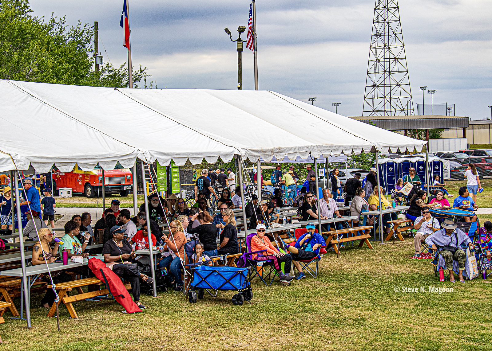
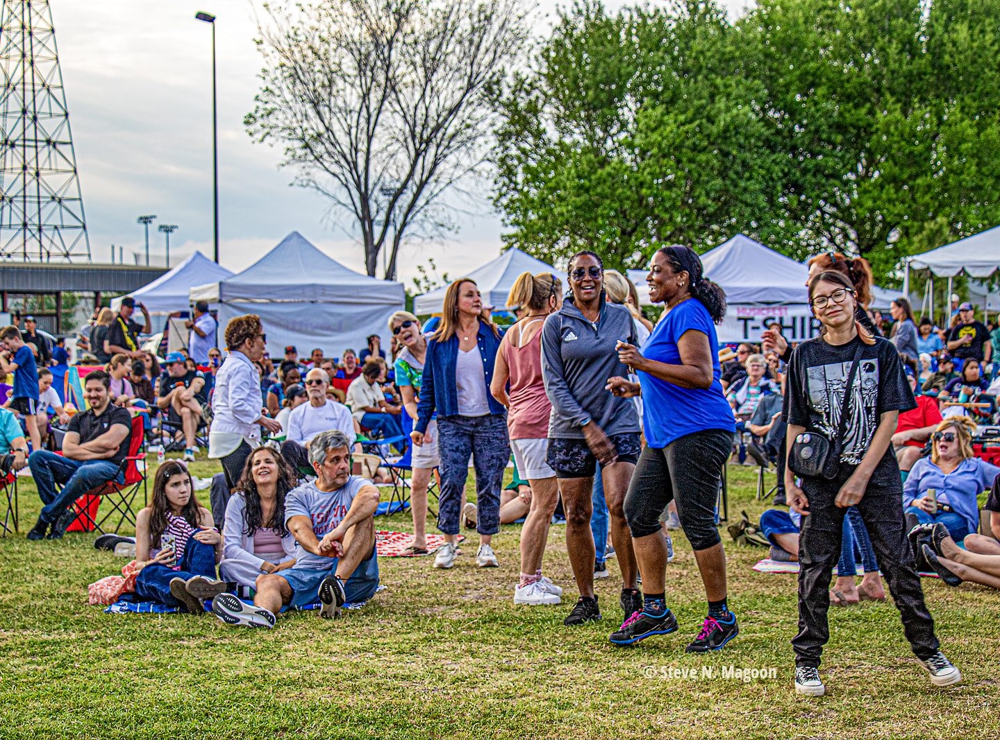
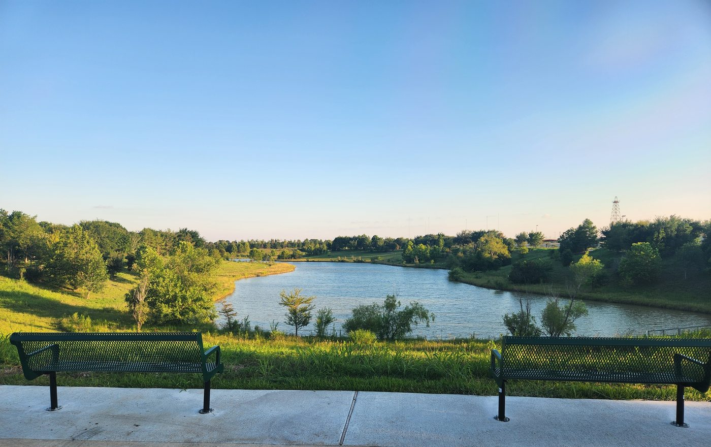

A permanent home for free live music, rising on historic industrial ground beside 291 acres of restored greenway.
Levitt Pavilion Houston is planned for approximately 8 acres of the former Shell Gasmer site at 5521 Gasmer Drive, beside Willow Waterhole Greenway.
The broader former Shell property is being planned as a welcoming new entrance to Willow Waterhole Greenway. Levitt Houston will bring free live music to the heart of that future experience.

The former Shell Gasmer site at Willow Waterhole, Spring 2026.

Early concept rendering. The future pavilion design will take shape through the planning process now underway.
The future pavilion will pair a professional outdoor stage with an open lawn where families, friends, and neighbors can gather for 40 to 50 free concerts each year. Visitors will be able to bring a blanket or lawn chair, enjoy food and music, and share the experience in a welcoming outdoor setting.
Across the country, Levitt venues combine high-quality artists, free admission, relaxed lawn seating, and a strong sense of community. Houston will bring that proven experience to a setting unlike any other in the network.
The historic steel derrick will remain as a defining landmark for Levitt Houston. It connects the site’s energy heritage to a new chapter centered on music, community, and public life.

Professional concerts that remain open and accessible to the entire community.
A welcoming outdoor setting where people from across Houston can spend time together through music.
A permanent venue beside 291 acres of lakes, trails, prairie, and community-built greenspace.

Westbury Lake, Willow Waterhole Greenway. Photo: Becky Edmondson.
New opportunities for students, emerging artists, and community performers across Southwest Houston.
A cultural destination designed to serve the area for generations.